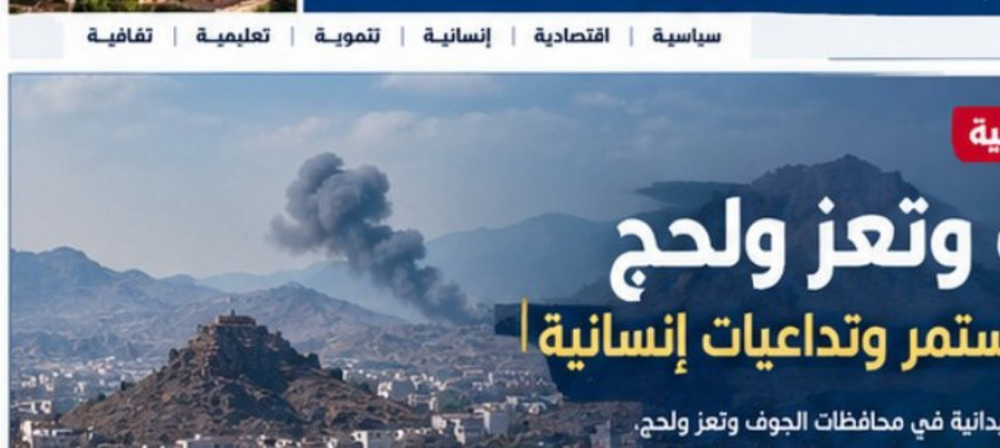
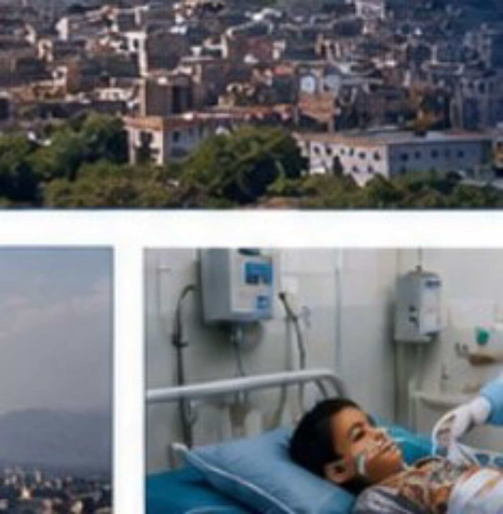
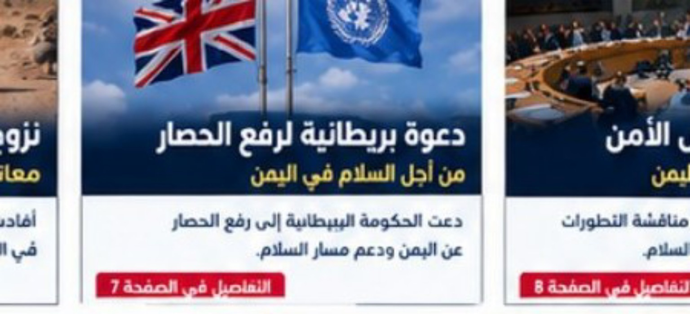
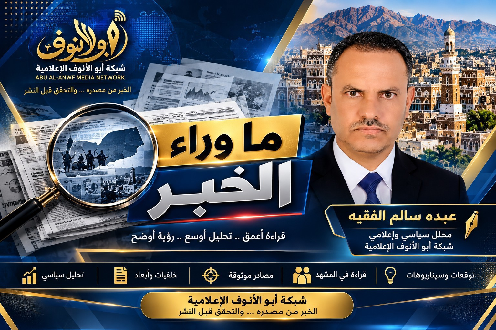

الميدان العسكري
القوات المسلحة تعلن تنفيذ 875 عملية استهداف خلال الفترة المعلنة
البيان العسكري نسب إلى القوات المسلحة تنفيذ العمليات وتحييد نحو 130 عنصراً وقيادياً وإعطاب أو تدمير 50 آلية ومعدة.
التفاصيلشبكة أبو الأنوف الإعلامية
صوت الوعي والمسؤولية — وعي يصنع الفرق
تغطية للمتغيرات العسكرية في تعز ولحج ومأرب والجوف، والملفات الإنسانية والتعليمية والخدمية، مع رصد المواقف الرسمية والإقليمية، والتمييز بين البيانات المنسوبة والوقائع التي أمكن التحقق منها.
منهج النشر: تُنسب التصريحات والأرقام إلى الجهات التي أعلنتها. لا تُعرض تقديرات الخسائر بوصفها حصيلة مستقلة، ولا تُدمج أرقام البيانات اليومية في مجموع تراكمي. المواد التي لم يتسن التحقق منها مستقلاً تبقى منسوبة إلى مصدرها.
البيان العسكري نسب إلى القوات المسلحة تنفيذ العمليات وتحييد نحو 130 عنصراً وقيادياً وإعطاب أو تدمير 50 آلية ومعدة.
التفاصيلتقرير صحفي يرصد المواجهات في المحافظات الأربع، بما فيها محاور طور الباحة والأقروض ومأرب والجوف.
التفاصيلشحنة تتضمن مستلزمات طبية وحقائب جراحية لدعم المستشفيات التي تستقبل المصابين.
التفاصيلعرض صادر عن قطاع التربية في تعز، وتُنسب تفاصيله إلى الجهة التي قدمت التقرير.
التفاصيلإحصائية صادرة عن قطاع الهجرة والجوازات في وزارة الداخلية.
التفاصيلقراءة في العلاقة بين التطورات العسكرية وحماية المدنيين واستمرار الخدمات الأساسية.
اقرأ التحليلأعلنت القوات المسلحة، وفق بيان نشره الإعلام الأمني في 7 نوفمبر، تنفيذ 875 عملية استهداف ضد مواقع وتجمعات وتعزيزات وآليات ومصادر نيران تابعة للحوثيين. ونسب البيان إلى العمليات تحييد نحو 130 عنصراً وقيادياً، وتدمير أو إعطاب 50 آلية ومعدة عسكرية.
هذه أرقام الجهة العسكرية المعلنة وليست تحققاً مستقلاً. وهي حصيلة مرتبطة بالفترة التي حددها البيان، ولا تُجمع مع بيانات أيام أخرى.

رصدت صحيفة الشرق الأوسط في 8 نوفمبر تصاعد المواجهات في محافظات تعز ومأرب والجوف ولحج، ونقلت عن مصادر عسكرية ميدانية معلومات بشأن محاور القتال ومواقع التقدم والتحركات. كما أورد التقرير مخاوف صحية في تعز مرتبطة باقتراب نفاد وقود تشغيل مولدات المستشفيات.
وفي تغطية بتاريخ 6 نوفمبر، نقلت وكالة الأناضول عن وزارة الدفاع والجيش تصريحات بشأن استعادة مواقع في تعز، ومواجهات على جبهات الأقروض والشقب وطور الباحة، وعمليات في مأرب. وتظل تفاصيل السيطرة والنتائج الميدانية منسوبة إلى الجهات التي أعلنتها.
لم يتوفر في هذه الجولة توثيق مستقل كافٍ لتفاصيل عقبة التُّرَة أو تطورات ميدانية مستقلة في البيضاء؛ لذلك لا ندرج ادعاءات ميدانية غير مثبتة.

أعلنت اللجنة الدولية للصليب الأحمر في 4 نوفمبر إيصال أربع شاحنات من الإمدادات الطبية الأساسية إلى مدينة تعز، بينها حقائب جراحية تساعد المستشفيات على علاج المصابين بالأسلحة. وقالت اللجنة إن المرافق الصحية تواجه ضغوطاً شديدة في ظل استمرار القتال وصعوبة الوصول إلى بعض المناطق.
وشملت المرافق التي أشارت إليها اللجنة مستشفى الثورة ومستشفيات ومراكز صحية في مناطق عدة من المحافظة. ودعت اللجنة أطراف النزاع إلى تسهيل وصول المساعدات وحماية المرضى والعاملين والمنشآت الطبية.

ذكرت وكالة سبأ في تقرير منشور بتاريخ 7 نوفمبر أن قطاع التربية في محافظة تعز عقد مؤتمراً صحفياً لعرض تقرير إحصائي عن الأضرار المادية والإنسانية التي قال إنها لحقت بالمدارس والمنشآت التعليمية خلال شهري سبتمبر وأكتوبر 2026.
ونظراً إلى أن التقرير صادر عن جهة محلية تابعة لسلطات صنعاء، فإن النشرة تنسب ما ورد فيه إلى الجهة التي عرضته، ولا تتبنى توصيف المسؤولية أو الأرقام بوصفها حقائق مستقلة قبل مراجعة التقرير الأصلي ومقارنتها بمصادر أخرى.
قالت وزارة الداخلية إن المنافذ الجوية والبرية سجلت وصول ومغادرة 47,381 مسافراً خلال الأيام الأربعة السابقة لبيانها المنشور في 7 نوفمبر، بواقع 23,803 وافدين و23,578 مغادراً. وشملت الحركة مطاري عدن وسيئون ومنافذ الوديعة وصرفيت وشحن.

تكشف التطورات الميدانية المتزامنة في تعز ولحج ومأرب والجوف أن المشهد اليمني لا يمكن قراءته من زاوية التحركات العسكرية وحدها. فكل تغير على خطوط المواجهة ينعكس سريعاً على الطرق، وحركة السكان، وإمدادات الوقود، وقدرة المستشفيات والمدارس على الاستمرار.
وفي تعز، يبرز وصول الإمدادات الطبية عبر اللجنة الدولية للصليب الأحمر بوصفه استجابة عاجلة لحاجة صحية متفاقمة، لكنه لا يعالج وحده هشاشة المنظومة الصحية ولا صعوبة وصول المرضى إلى العلاج. كما أن التحذيرات المتعلقة بوقود المستشفيات تضع السلطات والجهات الداعمة أمام مسؤولية تأمين إمدادات مستمرة لا تقتصر على الشحنات الطارئة.
أما في ملف التعليم، فإن نشر تقارير الأضرار يجب أن يقترن بإتاحة الوثائق الأصلية، والتحقق من المواقع والأرقام، وتحديد احتياجات إعادة التأهيل، بعيداً عن توظيف المدارس والطلاب في السجال السياسي. حماية التعليم حق للطلاب، كما أن حماية المنشآت الصحية والمدنية التزام لا يجوز تعطيله.
الخلاصة أن أي نجاح عسكري أو سياسي يفقد قيمته إذا لم ينعكس أمناً للمدنيين، وفتحاً للطرق، واستمراراً للخدمات الأساسية. المطلوب مسار متوازٍ: إدارة مسؤولة للميدان، واستجابة إنسانية عاجلة، ومساءلة قائمة على الأدلة، وخطة عملية لاستعادة مؤسسات الدولة والخدمات.
لا تستطيع السلطات المحلية مواجهة أعباء التعافي وإعادة بناء المؤسسات منفردة؛ فنجاحها يتوقف على تحويل المجتمع من متلقٍ للخدمات إلى شريك في تحديد الأولويات، ومراقبة التنفيذ، وحماية الموارد العامة، وتقييم النتائج.
تأتي هذه الحلقة امتداداً لمسار الرؤية الاستراتيجية الذي بدأ بعودة القيادات والكفاءات، ثم تناول استيعاب أبناء المحافظات المهجّرين والنازحين والمبعدين. أما الحلقة الثالثة فتنتقل إلى سؤال جوهري: كيف تُبنى شراكة مجتمعية منظمة تجعل المواطن والقطاع الخاص والجامعات والنقابات ومنظمات المجتمع المدني شركاء في إدارة الشأن المحلي، من دون أن تتحول المشاركة إلى محاصصة أو واجهة شكلية؟
يحتاج كلٌّ من المحافظات والمديريات إلى آليات معلنة للحوار والتشاور، تشمل لقاءات دورية مع ممثلي المجتمع والقطاعات المهنية والشباب والمرأة والنازحين وذوي الإعاقة. وينبغي أن تُعلن موضوعات النقاش مسبقاً، وأن تُنشر خلاصات الاجتماعات والتوصيات وما اتُّخذ بشأنها، حتى لا تبقى المشاركة محصورة في مناسبات بروتوكولية.
تُبنى الخطط المحلية على بيانات الاحتياج الفعلي، لا على الانطباعات أو النفوذ. وتُرتب المشروعات وفق معايير واضحة، مثل عدد المستفيدين، ودرجة الإلحاح، والأثر على الخدمات الأساسية، وإمكان التنفيذ، والعدالة بين المديريات. ويُتاح للمواطنين الاطلاع على هذه المعايير وإبداء الملاحظات قبل اعتماد الموازنات والبرامج.
تُنشأ آليات آمنة لتلقي الشكاوى والملاحظات، وتُنشر بيانات موجزة عن العقود والمشروعات ونسب الإنجاز والتعثر، مع حماية المبلّغين والبيانات الشخصية. وتكمل الرقابة المجتمعية عمل الأجهزة الرسمية ولا تحل محلها؛ فالمساءلة القانونية والشفافية المالية تظلان مسؤولية مؤسسات الدولة المختصة.
يمكن للقطاع الخاص الإسهام في التدريب والتشغيل وتحسين الخدمات وفق اتفاقات معلنة تمنع تضارب المصالح، فيما تقدم الجامعات ومراكز البحث الدراسات والبيانات والتقييم المستقل. كما تستطيع النقابات والهيئات المهنية تقديم الخبرة الفنية وتحديد احتياجات العاملين، بما يربط القرار المحلي بالمعرفة والخبرة العملية.
لا تكون الشراكة عادلة إذا اقتصرت على الشخصيات النافذة أو المكونات الأكثر حضوراً. لذلك يجب ضمان تمثيل النساء والشباب والنازحين والفئات الأشد احتياجاً والمناطق الأقل خدمة، مع اعتماد معايير معلنة للاختيار وتدوير فرص المشاركة، وتجنب فرض الولاءات الحزبية أو المناطقية على العمل العام.
الخلاصة الاستراتيجية: الشراكة المجتمعية ليست بديلاً عن الدولة ولا تنازلاً عن مسؤولية المحافظ؛ إنها أداة لتحسين القرار، وتوسيع قاعدة الثقة، وتعبئة الموارد والخبرات، وتعزيز الرقابة. وكلما كانت المشاركة منظمة وشفافة وشاملة، أصبحت الإدارة المحلية أقدر على تحويل الاستقرار إلى خدمات وتنمية، وربط المحافظات بمشروع وطني جامع لاستعادة الدولة وبنائها.
الخبر من مصدره… والتحقق قبل النشر.